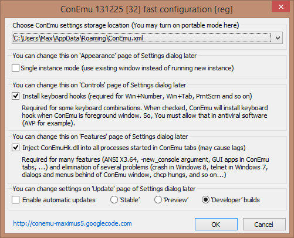

Первый запуск ConEmu
На сайт программы регулярно приходят по результатам поискового запроса «настройка ConEmu». Мне, как разработчику, непонятно, что там может быть непонятного ;-) Вопросов не задают ни здесь (в комментариях), ни здесь. В общем, если по прочтении нижеизложенного материала вопросы остаются - задавайте.
Про настройку ConEmu хочется сказать следующее
Итак, при первом запуске программы вы, скорее всего, увидите диалог быстрой настройки:

Вы можете выбрать, что будете разрешать ConEmu, т.к. на некоторые функции (перехват клавиатуры, внедрение в процессы, доступ к интернету) могут ругаться антивирусные программы. ConEmu не содержит троянов или вирусов, код открыт, можете проверить. Тем не менее, вы можете отключить эти функции, хотя это и не рекомендуется.
Если флажок отключить, ConEmu не сможет обрабатывать некоторые клавиатурные комбинации. Например, в Windows 7 комбинации Win+цифра (Win+1, Win+2, т.д.) переключают/запускают программы на панели задач. А ведь ими удобно переключать табы в окне ConEmu. Включение флажка «Install keyboard hooks» означает не то, что ConEmu будет блокировать системные клавиатурные комбинации, а только то, что у вас есть возможность включить или отключить их перехват в диалоге настроек. Например, флажками «Win+Number - activates console», «Win+Tab - switch consoles (Tabs)» и т.п. (вкладка «Keys» диалога настроек).
Для многих возможностей (обработку параметра "-new_console", работу графических приложений во вкладках ConEmu, ...) и избежания проблем (например, появление графических диалогов или меню под окном ConEmu, ...) требуется внедрение в запускаемые процессы библиотеки ConEmuHk.dll (или ConEmuHk64.dll для 64-битных приложений).
Все очевидно, разрешить обновление программы из интернета. Потом, в диалоге настроек на вкладке «Update» можно будет настроить параметры обновления. ConEmu не «самовольничает», перед запуском процесса обновления у вас спросят подтверждение.
Пользователи Windows Vista могут увидеть этот флажок. Почему и зачем написано в FAQ.
ConEmu запускает в своей вкладке либо Far Manager (если найден), либо cmd.exe, либо ту программу (или программы), которые указаны в свойствах ярлыка или в настройке ConEmu.